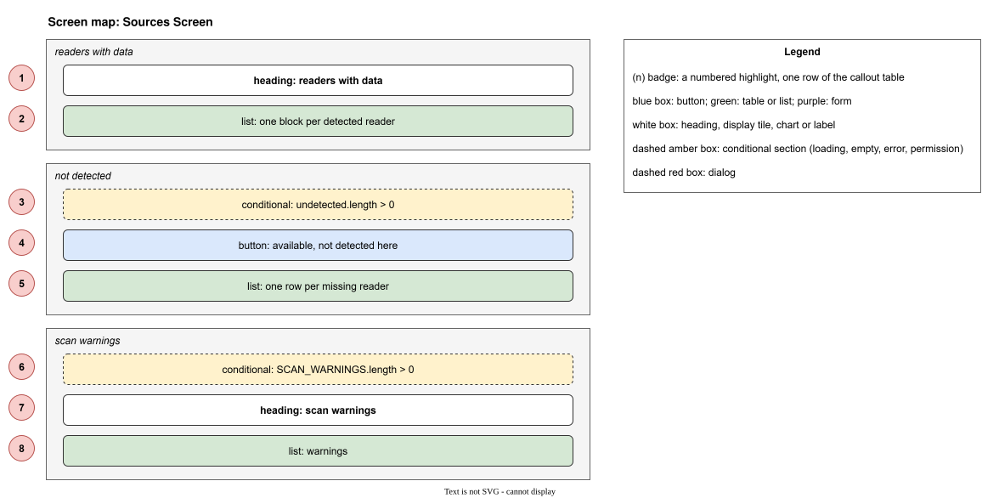

active approved inferred covers web/src/prototype/**
Sources Screen Screen Map
This view shows the screen that lists which log readers found data on the machine, which did not, and which files could not be parsed. It helps a developer check that the real Sources screen explains missing data as clearly as the prototype does. Each numbered highlight matches a row in the table of the screen note.
Sources Screen screen map

Node citations
- el-1:
web/src/prototype/SourcesScreen.tsx:16-19 - el-2:
web/src/prototype/SourcesScreen.tsx:22-46 - el-3:
web/src/prototype/SourcesScreen.tsx:51-80 - el-4:
web/src/prototype/SourcesScreen.tsx:52-57 - el-5:
web/src/prototype/SourcesScreen.tsx:60-72 - el-6:
web/src/prototype/SourcesScreen.tsx:82-92 - el-7:
web/src/prototype/SourcesScreen.tsx:84-87 - el-8:
web/src/prototype/SourcesScreen.tsx:89-89 - badge-1:
web/src/prototype/SourcesScreen.tsx:16-19 - badge-2:
web/src/prototype/SourcesScreen.tsx:22-46 - badge-3:
web/src/prototype/SourcesScreen.tsx:51-80 - badge-4:
web/src/prototype/SourcesScreen.tsx:52-57 - badge-5:
web/src/prototype/SourcesScreen.tsx:60-72 - badge-6:
web/src/prototype/SourcesScreen.tsx:82-92 - badge-7:
web/src/prototype/SourcesScreen.tsx:84-87 - badge-8:
web/src/prototype/SourcesScreen.tsx:89-89